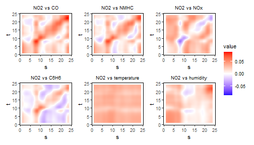
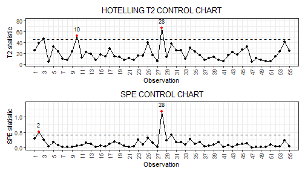
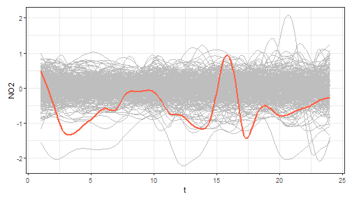
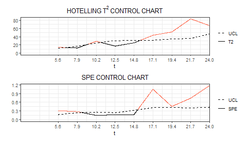

In this vignette we show how to use the funcharts
package to apply the methods proposed in Centofanti et al. (2021) to
build the functional regression control chart to monitor a functional
quality characteristic adjusted for by the effect of multivariate
functional covariates. Let us show how the funcharts
package works through an example with the dataset air,
which has been included from the R package FRegSigCom and
is used in the paper of Qi and Luo (2019). The authors propose a
function-on-function regression model of the NO2 functional
variable on all the other functional variables available in the
dataset.
First of all, starting from the discrete data, let us build the
multivariate functional data objects of class mfd, see
vignette("mfd").
library(funcharts)
data("air")
fun_covariates <- names(air)[names(air) != "NO2"]
mfdobj <- get_mfd_list(air, grid = 1:24)
mfdobj_y <- mfdobj[, "NO2"]
mfdobj_x <- mfdobj[, fun_covariates]In order to perform the statistical process monitoring analysis, we divide the data set into a phase I and a phase II dataset.
rows1 <- 1:300
rows2 <- 301:355
mfdobj_x1 <- mfdobj_x[rows1]
mfdobj_x2 <- mfdobj_x[rows2]
mfdobj_y1 <- mfdobj_y[rows1]
mfdobj_y2 <- mfdobj_y[rows2]We can build a function-on-function linear regression model using the
function fof_pc, which is based on the multivariate
functional principal component analysis (MFPCA) on the multivariate
functional covariates and the functional response.
The components to retain in the MFPCA models are selected according
to the total variance explained criterion, which can be set in the
arguments tot_variance_explained_x,
tot_variance_explained_y and
tot_variance_explained_res (for the residuals). One can
also set the type_residuals in order to choose between standard
residuals and studentized residuals (see Centofanti et al. (2021)).
mod_fof <- fof_pc(mfdobj_y = mfdobj_y1, mfdobj_x = mfdobj_x1)As a result you get a list with the original data used for model
estimation, the result of applying pca_mfd on the
multivariate functional covariates, the functional response, and the
residuals, the estimated regression model and additional information. It
is possible to plot the estimated functional regression coefficients,
which is a bivariate functional data object of class bifd
using the function plot_bifd:
plot_bifd(mod_fof$beta_fd)
The function regr_cc_fof provides a data frame with all
the information required to plot the desired functional regression
control chart (see Centofanti et al. (2021)). Among the arguments, you
can pass a tuning data set with the arguments
mfdobj_y_tuning and mfdobj_x_tuning, which is
not used for model estimation/training, but is used only to estimate
control chart limits. If this data set is not provided, control chart
limits are calculated on the basis of the training data. The arguments
mfdobj_y_new and mfdobj_x_new contain the
phase II data set of observations of the functional response and
multivariate functional covariates that are to be monitored with the
control charts. The function plot_control_charts plots the
control charts.
frcc_df <- regr_cc_fof(object = mod_fof,
mfdobj_y_new = mfdobj_y2,
mfdobj_x_new = mfdobj_x2)
plot_control_charts(frcc_df)
We can also plot the new functions to be monitored, against the
reference training data set, by first using predict_fof_pc,
which produces the prediction of new observations of the functional
response given the new observations of the functional covariates, as
well as the corresponding prediction error:
y_hat <- predict_fof_pc(object = mod_fof,
mfdobj_y_new = mfdobj_y2,
mfdobj_x_new = mfdobj_x2)and then using plot_mon to plot a given observation
against the reference data set of prediction errors/residuals used to
estimate the control chart limits. Here for example we consider the
observation 28
plot_mon(cclist = frcc_df,
fd_train = mod_fof$residuals,
fd_test = y_hat$pred_error[28])
The funcharts package also provides the real-time
version of the functional regression control chart. Given the domain
interval \((a, b)\) of the functional
data, for each current domain point \(k\) to be monitored, it filters the
available functional data in the interval \((a,k)\). The function
get_mfd_list_real_time gives a list of functional data
objects each evolving up to the intermediate domain point \(k\).
mfd_list <- get_mfd_list_real_time(data_list = air, grid = 1:24)
mfd_list_x1 <- lapply(mfd_list, function(x) x[rows1, fun_covariates])
mfd_list_x2 <- lapply(mfd_list, function(x) x[rows2, fun_covariates])
mfd_list_y1 <- lapply(mfd_list, function(x) x[rows1, "NO2"])
mfd_list_y2 <- lapply(mfd_list, function(x) x[rows2, "NO2"])Then, the function fof_pc_real_time applies the function
fof_pc to each element in mfd_list_x1 and
mfd_list_x2.
mod_fof_pc_real_time_list <- fof_pc_real_time(
mfdobj_y_list = mfd_list_y1,
mfdobj_x_list = mfd_list_x1)Then, we can use control_charts_fof_pc_real_time to
apply control_charts_fof_pc to each element in
mod_fof_pc_real_time_list and produce control charts for
the phase II data mfd_list_y2 and
mfd_list_x2.
cc_list_real_time <- regr_cc_fof_real_time(
mod_list = mod_fof_pc_real_time_list,
mfdobj_y_new_list = mfd_list_y2,
mfdobj_x_new_list = mfd_list_x2
)Finally, we can plot the real-time control charts for a single observations, giving for each \(k\) the monitoring statistics calculated on the data observed in \((a, k)\). Here follows an example showing the real time control charts for a single phase II observation (id number 28).
plot_control_charts_real_time(cc_list_real_time, id_num = 28)